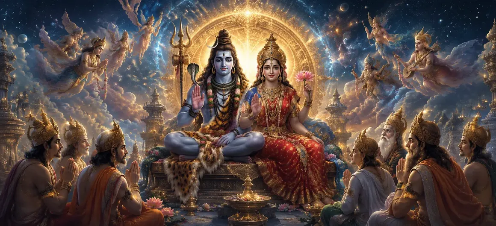

A Hymn Addressed to Shiva and Shakti
In Chapter 15 of the Vayaviya Samhita, divine sages and celestial beings unite in offering sublime hymns of praise to Supreme Lord Shiva and Divine Mother Shakti, exalting their inseparable cosmic unity.
This chapter encapsulates the pinnacle of devotional poetry within the Shiva Purana.
Seekers find deep spiritual solace and inspiration through these sacred verses.
Chapter 15 Comprehensive Highlights
Sublime Hymns
Poetic verses dedicated to Supreme Shiva & Shakti.
Inseparable Unity
Exalting the non-duality of consciousness and power.
Devotional Ecstasy
The ecstatic praise offered by enlightened sages.
Cosmic Parents
Recognizing Shiva and Shakti as the source of all existence.
Mental Purification
The purifying effect of chanting sacred prayers.
Gateway to Shakti's Form
Preparing the path for the manifestation of Divine Shakti.
Core Topics in This Chapter
- 01Chanting the Supreme Hymns→
- 02The Non-Duality of Shiva and Shakti→
- 03Praising Consciousness and Dynamic Energy→
- 04Sages Expressing Profound Devotion→
- 05Shiva-Shakti as Universal Parents→
- 06Purification of the Inner Heart→
- 07Eradicating Illusion and Sorrow→
- 08Granting Supreme Peace and Liberation→
- 09Ecstatic Response of Celestial Beings→
- 10Transition to The Manifestation of Divine Shakti→
Chanting the Supreme Hymns
The enlightened sages raise their voices in melodious and profound praise, revering the supreme majesty of Shiva and Shakti.
Every verse resonates with pure devotion, echoing through all spiritual dimensions.
The Non-Duality of Shiva and Shakti
The hymns emphasize that Shiva and Shakti are fundamentally one, just as fire and its burning power cannot be separated.
Praising Consciousness and Dynamic Energy
Shiva represents pure static consciousness, while Shakti represents the vibrant dynamic energy that animates the entire cosmos.
Sages Expressing Profound Devotion
Overwhelmed by grace, the assembled sages bow down in utter surrender, offering their intellect and heart to the Divine.
Shiva-Shakti as Universal Parents
The verses address the divine couple as the true mother and father of all living beings, nurturing creation with boundless love.
Purification of the Inner Heart
Hearing or reciting this hymn cleanses the mind of impurities, washing away mental turbulence and ego.
Eradicating Illusion and Sorrow
The luminous power of the hymn pierces through the veil of worldly illusion, bringing supreme clarity and peace.
Granting Supreme Peace and Liberation
Devotees who immerse themselves in this praise attain steady spiritual poise and ultimate liberation from repeated birth.
Ecstatic Response of Celestial Beings
Celestial witnesses shower flowers from the heavens, rejoicing in the glorious exposition of the Supreme Truth.
Transition to The Manifestation of Divine Shakti
Concluding the majestic hymns, the narrative transitions seamlessly into detailing the specific manifestation of Divine Shakti.
Extended Key Teachings of Chapter 15
Sacred Hymns
Poetic praise of Shiva & Shakti.
Non-Dual Reality
Consciousness and power as one.
Pure Devotion
Complete surrender of the ego.
Cosmic Parents
Nurturing all realms with love.
Inner Peace
Cleansing mental impurities.
Shakti's Glory
Setting stage for Shakti manifestation.
Expanded Spiritual Reflection
When we recite the holy hymns dedicated to Shiva and Shakti, we dissolve the artificial barriers between ourselves and the cosmos, realizing that divine consciousness and dynamic power operate in perfect harmony within every heartbeat.
Living the Message of Chapter 15
Incorporate daily devotional prayer and remembrance of Shiva and Shakti into your spiritual routine.
View all dynamic actions in life as the expression of Divine Shakti guided by Supreme Consciousness.
Cultivate an attitude of gratitude and surrender toward the universal parents.
Detailed Key Spiritual Concepts
The hymn praising Shiva and Shakti.
The realization of non-duality.
Consciousness as dynamic power.
The path of supreme devotion.
The divine parents of the universe.
Purification of mind through praise.
Exhaustive Chapter Summary
Vayaviya Samhita Chapter 15 ('A Hymn Addressed to Shiva and Shakti') presents a breathtaking collection of devotional hymns chanted by sages in praise of Supreme Shiva and Divine Mother Shakti. It extols their inseparable non-duality as consciousness and dynamic power, offering immense spiritual purification and peace to all who read or hear it, while setting the stage for the specific manifestation of Divine Shakti in the next chapter.
Frequently Asked Questions
1. What is the primary theme of Vayaviya Samhita Chapter 15 ('A Hymn Addressed to Shiva and Shakti')?
The chapter presents profound hymns and prayers chanted in praise of Supreme Lord Shiva and Divine Mother Shakti, acknowledging their inseparable cosmic unity.
2. Why are Shiva and Shakti addressed together in these hymns?
Shiva and Shakti are non-different; consciousness and its dynamic power form the dual yet single reality underlying the entire universe.
3. What spiritual benefits are gained by reciting or meditating on this hymn?
Recitation purifies the mind, deepens devotion, awakens spiritual realization, and invokes divine grace for liberation.
4. How do the sages express their devotion in this chapter?
The sages offer heartfelt, poetic, and scripturally rich verses recognizing Shiva and Shakti as the supreme parents of the cosmos.
5. What role does devotion play according to this hymn?
Devotion (Bhakti) serves as the supreme bridge uniting the individual soul with the cosmic consciousness of Shiva-Shakti.
6. What is the next chapter for navigation after this chapter?
The next chapter for navigation is 'The Manifestation of Divine Shakti'.
“Shiva is consciousness and Shakti is dynamic power; their harmonious union sustains and liberates the entire cosmos.”
Continue Through Vayaviya Samhita
Chapter 15 concludes. Continue to the next chapter, The Manifestation of Divine Shakti.